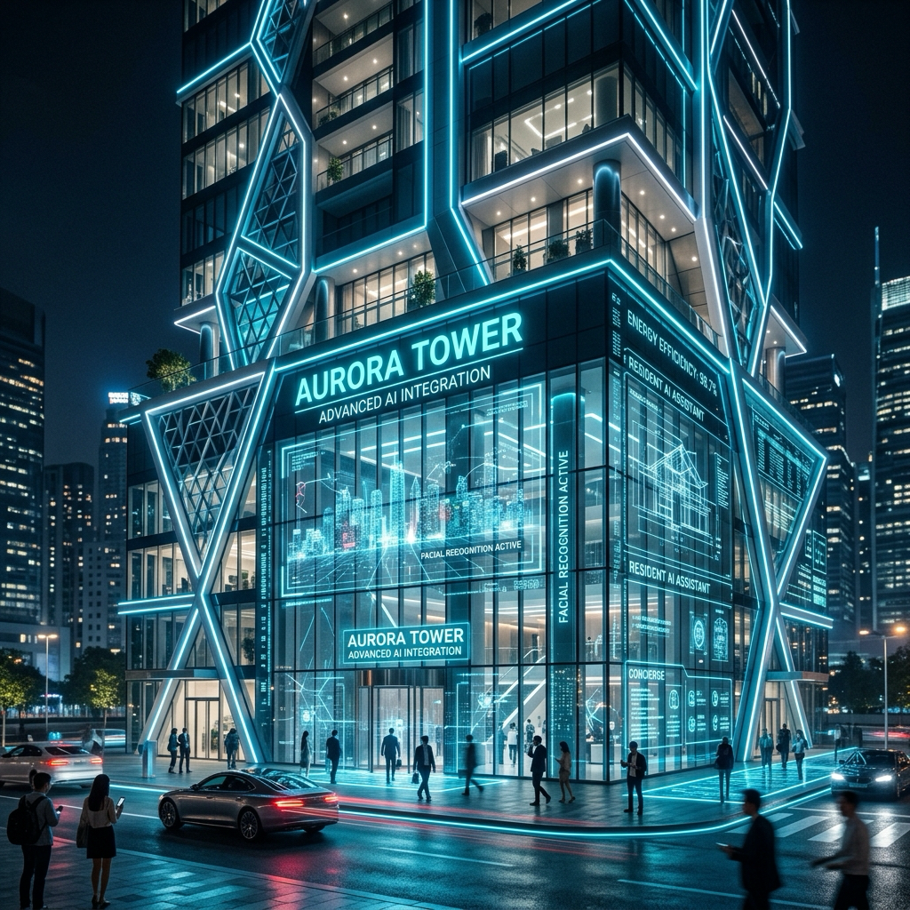
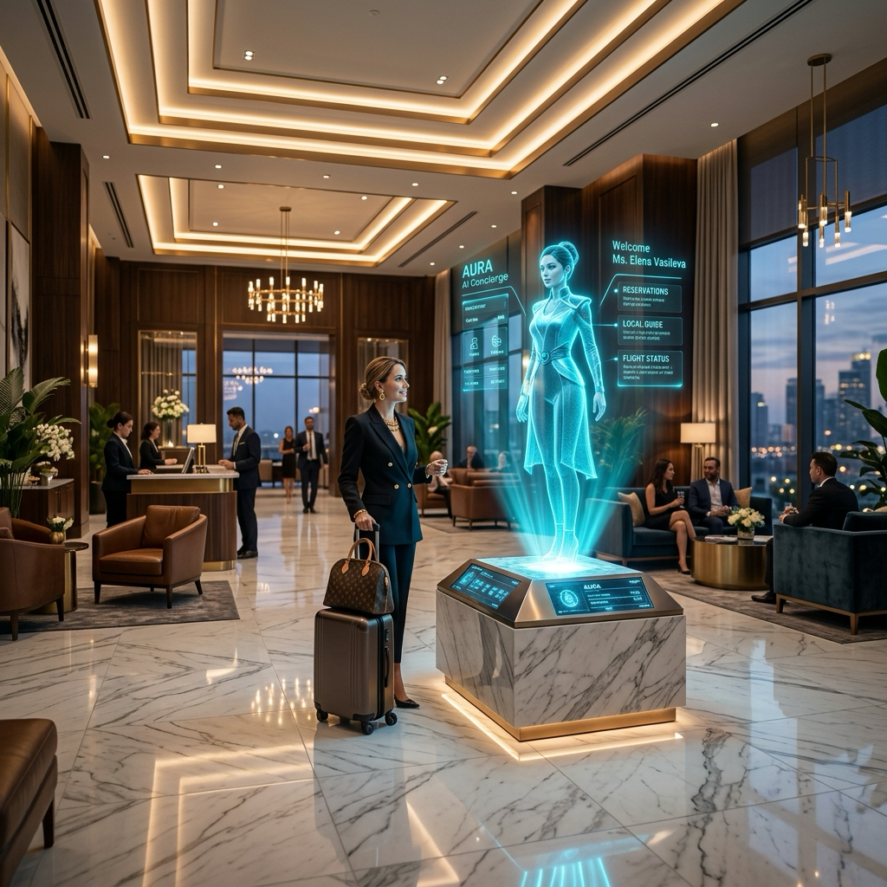
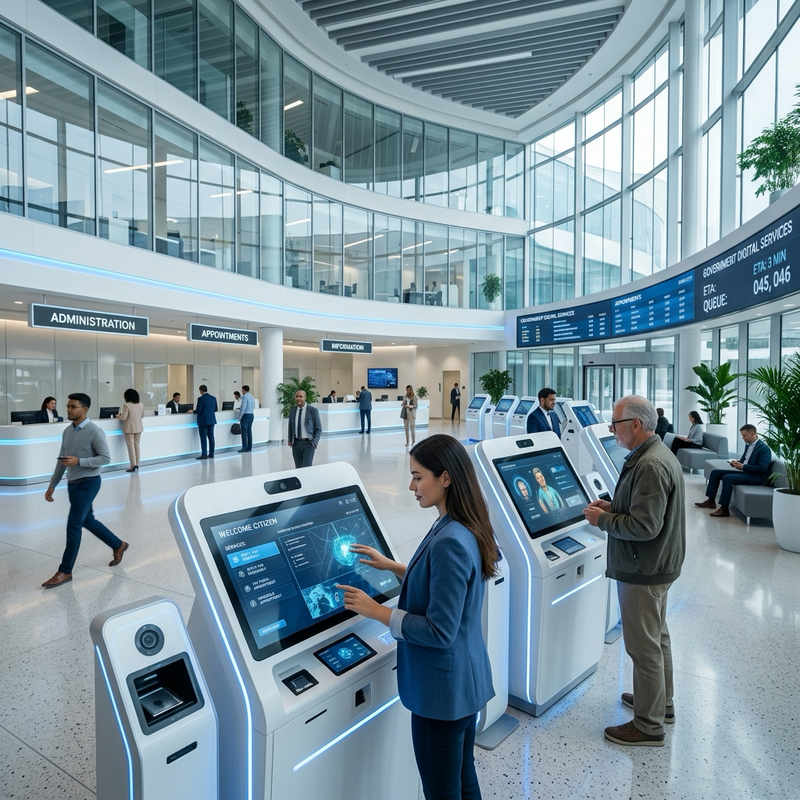

SISTEMAS AUTÓNOMOS DE ALTO NIVEL
Automatiza tu empresa.
Automatiza tu empresa.
Reduce costos.
Escala sin límites.
Transformamos procesos manuales en sistemas inteligentes que trabajan 24/7 por ti.
¿Tu empresa está atascada en el pasado?
"Las empresas pierden hasta el 40% de su productividad por falta de automatización."
Pérdida de Tiempo
Errores Humanos
Procesos Manuales
Altos Costos
Arquitectura Operativa
Qué partes de tu empresa automatizamos
No desplegamos herramientas aisladas. Transformamos departamentos enteros en ecosistemas de alto rendimiento operando en piloto automático.
Ventas y Crecimiento
El Problema
Leads no cualificados consumen el tiempo comercial y las oportunidades se enfrían por falta de seguimiento rápido.
Automatización Aplicada
Agentes IA de venta que pre-cualifican, hacen seguimiento predictivo omnicanal y agendan reuniones directamente en su CRM.
Resultado Empresarial
Aumento del 40% en tasa de conversión y reducción drástica del ciclo de venta.
Atención al Cliente
El Problema
Tiempos de espera largos, respuestas inconsistentes y equipos de soporte saturados fuera del horario laboral.
Automatización Aplicada
Ecosistema de asistencia omnicanal (Voz, WhatsApp, Web) que resuelve incidencias complejas leyendo su base de conocimiento en milisegundos.
Resultado Empresarial
Resolución al primer contacto del 85% y operatividad 24/7/365 sin costes laborales extra.
Operaciones
El Problema
Cuellos de botella entre departamentos, procesos fragmentados y falta de visibilidad en la cadena productiva.
Automatización Aplicada
Orquestación robótica (RPA) combinada con IA para sincronizar inventarios, logística y flujos de trabajo en tiempo real.
Resultado Empresarial
Flujos de trabajo 5x más rápidos y eliminación absoluta de fricciones interdepartamentales.
Administración
El Problema
Inversión excesiva de horas en validación de documentos, "picado" manual de datos y gestión de contratos.
Automatización Aplicada
Sistemas de Visión y OCR inteligente que extraen, validan y vuelcan información no estructurada directamente a su ERP corporativo.
Resultado Empresarial
Reducción del 90% en carga administrativa manual y trazabilidad documental perfecta.
Marketing
El Problema
Campañas genéricas con bajo impacto y gestión reactiva e ineficiente de las bases de datos de clientes.
Automatización Aplicada
Análisis algorítmico de comportamiento y despliegue de personalización hiper-segmentada a escala mediante IA Generativa.
Resultado Empresarial
Maximización del LTV (Life Time Value) del cliente y aumento drástico del ROI publicitario.
Finanzas
El Problema
Cierres contables lentos, facturas traspapeladas y dificultad para proyectar el flujo de caja en tiempo real.
Automatización Aplicada
Conciliación bancaria autónoma y clasificación predictiva del gasto sin requerir supervisión humana constante.
Resultado Empresarial
Cierres financieros instantáneos, reducción de cuentas por cobrar y caja sin margen de error.
Gestión Interna (RRHH)
El Problema
Onboarding caótico, criba curricular manual interminable y pérdida de tiempo resolviendo dudas internas repetitivas.
Automatización Aplicada
Asistente IA corporativo para políticas internas y automatización integral de la captura y filtrado del talento.
Resultado Empresarial
Ahorro de 20+ horas semanales por reclutador e integración acelerada del nuevo talento.
Framework de Integración
Nuestro Proceso de Automatización
Un método científico, auditable y escalable. Cero improvisación, máxima eficiencia corporativa.
Auditoría Empresarial
Identificación quirúrgica de fugas de capital, tareas repetitivas y cuellos de botella operativos en su empresa.
Análisis de Procesos
Mapeo detallado de flujos de trabajo actuales y presentación de un informe técnico con cálculo de ROI proyectado.
Diseño de Automatización
Arquitectura del ecosistema de inteligencia artificial seleccionando las tecnologías y APIs óptimas para su caso.
Implementación Tecnológica
Despliegue silencioso y sin fricción con sus sistemas actuales (ERPs, CRMs) sin interrumpir sus operaciones.
Optimización Continua
Monitorización 24/7 del ecosistema, reentrenamiento de modelos y escalado para asegurar eficiencia permanente.
60%
35%
24/7
3x
Sectores Estratégicos
Especialización por Sectores
Entendemos la lógica de negocio de su industria. Diseñamos ecosistemas IA a medida que atacan directamente sus mayores fugas de capital.

Inmobiliarias y Real Estate
Problemas Actuales
Pérdida de leads fuera del horario comercial y asesores consumiendo el 60% de su jornada en prospectos no cualificados o que no responden.
Procesos Automatizados
Agentes IA de captura 24/7 que pre-cualifican según presupuesto/zona, agendan visitas automáticamente y preparan borradores de contratos.
Beneficios Económicos
Reducción drástica del Coste de Adquisición de Cliente (CAC) y liberación del tiempo de la fuerza de ventas para tareas de cierre.
Impacto Real
Aumento del 45% en visitas cerradas efectivas y 0 leads perdidos por falta de atención inmediata.
Clínicas Médicas y Estética
Problemas Actuales
Alto ausentismo de pacientes, recepción telefónica colapsada por dudas de rutina y descontrol en la facturación o citas cruzadas.
Procesos Automatizados
Agendamiento autónomo por WhatsApp, confirmación/reagendamiento proactivo a 24h y triaje inteligente de urgencias sincronizado con su software médico.
Beneficios Económicos
Maximización absoluta de la capacidad instalada de los boxes clínicos y contención del gasto en personal administrativo extra.
Impacto Real
Reducción del 80% en inasistencias (No-Shows) y recepcionistas liberadas para mejorar la experiencia presencial.
Despachos Profesionales (Legal y Fiscal)
Problemas Actuales
Miles de horas no facturables consumidas en búsqueda de jurisprudencia, redacción de burocracia repetitiva y recopilación de datos de clientes.
Procesos Automatizados
Sistemas RAG privados (Retrieval-Augmented Generation) para buscar en sus propias normativas, redactar borradores de demandas y clasificar expedientes.
Beneficios Económicos
Incremento directo del margen de beneficio neto por socio al minimizar las horas administrativas de los paralegales o juniors.
Impacto Real
Ahorro documentado de 15h semanales por abogado y eliminación del error humano en la revisión de contratos.

Hoteles y Hospitality
Problemas Actuales
Picos de demanda telefónica en recepción, oportunidades de "upselling" ignoradas y dudas repetitivas que degradan la experiencia del huésped.
Procesos Automatizados
Conserjería IA multilingüe (Voz/WhatsApp), automatización de check-in express y venta cruzada predictiva de servicios (spa, restaurantes).
Beneficios Económicos
Incremento exponencial del ticket medio por huésped durante la estancia y reducción de costes operativos en temporada alta.
Impacto Real
Resolución del 90% de dudas sin pasar por recepción y aumento del 25% en el consumo de servicios extra del hotel.

Administración Pública
Problemas Actuales
Burocracia insostenible, ciudadanos frustrados por tiempos de resolución eternos y departamentos colapsados por la revisión manual de documentos.
Procesos Automatizados
Sistemas IA de triaje ciudadano, guiado paso a paso en trámites telemáticos y pre-validación automática de documentos anexos (DNI, formularios).
Beneficios Económicos
Optimización radical del gasto público, cumplimiento estricto de los plazos legales de resolución y mejora de la imagen institucional.
Impacto Real
Reducción del 60% en tiempos de espera y capacidad de atención simultánea a miles de ciudadanos.
Sección Premium
No solo automatizamos tareas,
creamos
empresas inteligentes.
Inteligencia Artificial
Integraciones Empresariales
Automatización Inteligente
Sistemas Autónomos
Por qué los líderes eligen Labs24K
Escalar sin multiplicar costes
No instalamos software enlatado. Construimos la infraestructura tecnológica que permite a su empresa escalar sin multiplicar sus costes.
Control Total
Su IA en sus servidores. Cumplimos la Ley IA Europea.
ROI Rápido
Frameworks propios. Vea resultados el primer mes.
Ecosistemas Conectados
Integramos CRMs, ERPs en un solo cerebro.
Cero Fricción
Interfaces en WhatsApp y Voz. Fácil de usar.
Auditoría Quirúrgica
Atacamos matemáticamente la ineficiencia.
Sistemas Evolutivos
Arquitectura que escala con sus operaciones.